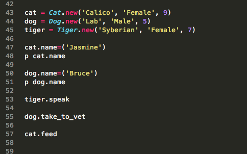
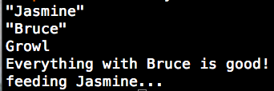
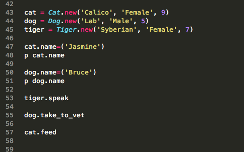
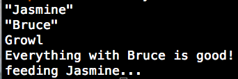
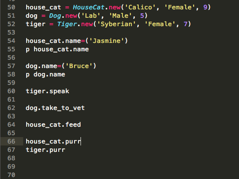
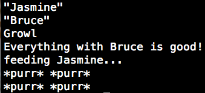
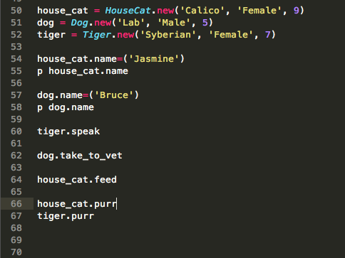
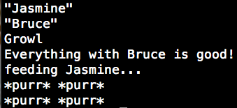

JDZ
Twitter GitHub LinkedInModules vs. Classes
A comparison
02/21/2015
So, we've talked about classes. They are blueprints for our objects that contain attributes, variables, and methods that will let our objects function in the world we create for them. So, where do modules fit in?
Modules are much like classes in that they contain all of the same things. But, you cannot create an instance of a module. Classes can obtain methods and attributes from modules much the same way that classes can inherit methods and attributes from a parent class.
The large difference is that classes can only inherit from one other class, and they can include (sort of a word for inheriting from a module) many different modules.
NOTE: include only will allow instance methods gathered from modules. extend is used to mix in class methods.
If a class B inherits from class A, and includes a model, class B will also inherit the module in much the way B would inherit what A has from a class that A inherited from.
Modules can be useful for functionalities that apply to many different objects. Say you have an Mammal class. And you have several child classes: HouseCat, Dog, and Tiger. You may want a Pet module to be included in only animals that would fit that definition. But you still want to inherit from Mammal class because we want those attributes to be shared by all of our child classes.
 



But wait, don't HouseCat and Tiger share something in common? They are both Cats...they should both be able to purr! Right? Well, we could make a whole new child class for Cat for them to inherit from, or we could just make a module with purr functionality. Especially if all we want is purring, a module is better. Though mainly cats are known for their purring, other animals exhibit this behavior as well (elephants, squirrels ect..) so our module might come in handy later for classes that don't fall in the cat CATigory (haha, get it?).
 


